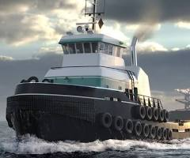

Conversation 1082
Tugboat Function and Technology
Prompt 1 · You
tugboat
Response 1 · Google AI Mode

 Wikipedia +1
Wikipedia +1Key Functions & Uses
- Harbor Assistance: Guides large cargo ships, tankers, and cruise ships during docking, undocking, and tight turns.
- Towing: Hauls disabled ships, barges, log rafts, or offshore oil platforms.
- Specialized Work: Functions as icebreakers, salvage boats, or floating fire engines equipped with high-capacity water cannons.
- Modern Innovations: Moving toward cleaner energy, including hybrid, LNG-fueled, ammonia-fueled, and fully electric designs like those developed by NAVTEK Naval Technologies. Wikipedia +5
Tugboat vs. Towboat
- Tugboats feature a pointed bow and deep hull designed to pierce waves and operate in rough coastal or open ocean waters.
- Towboats feature a squared-off bow and flat-bottomed hull built exclusively for pushing barges in calm, shallow inland rivers and canals. Dann Ocean Towing
Would you like to know more about bollard pull measurements, electric tugboat technology, or a specific famous tugboat wreck like the one in Curaçao?
Source links preserved from this response
- en.wikipedia.org
https://en.wikipedia.org/wiki/Tugboat - NAVTEK Naval Technologies
https://observerid.com/aboard-turkiyes-electric-tugboats-a-glimpse-of-a-cleaner-maritime-future/ - www.dannoceantowing.com
https://www.dannoceantowing.com/tugboat-vs-towboat/
Prompt 2 · You
monthly
Response 2 · Google AI Mode
The term monthly refers to something that occurs, is calculated, or is published once every month.
Because your request is open-ended, it most commonly applies to the following contexts:
- Personal Finance: Ongoing expenses or targets like a monthly budget, mortgage/rent payments, or recurring subscriptions.
- Time Management: Scheduling tools like a monthly planner or calendar to track goals and project deadlines.
- Media: Publications like a monthly magazine or newsletter that print twelve issues per year.
Are you looking to build a monthly budget framework, find a monthly calendar template, or track a specific monthly financial milestone?
Prompt 3 · You
monthly tugboat
Response 3 · Google AI Mode
When you combine the words "monthly" and "tugboat," the meaning changes dramatically depending on whether you are talking about maritime industries or internet subcultures.
The two primary definitions are outlined below:
1. Internet Slang (Chris Chan Lore)
In internet culture, "monthly tugboat" is an infamous piece of slang. Coined circa 2007 by internet personality Christine Weston Chandler (Chris Chan), it is used as a euphemism for a Social Security Disability Insurance (SSDI) or government welfare check.  Wiktionary, the free dictionary +2
Wiktionary, the free dictionary +2
Wiktionary, the free dictionary +2- The Metaphor: While the common idiom says "our ship has come in" to describe hitting a massive jackpot or financial windfall, Chris explained that a reliable, recurring monthly government check is more like a smaller, steady "tugboat" pulling you along.
 Kaikki.org +2
Kaikki.org +2
2. Maritime Industry Publications
If you are looking at actual naval and shipping terms, it refers to periodicals dedicated to the towage industry:
- TugeZine / TugDoc International: A widely read digital trade publication that tracks global tugboat builds, company histories, sales, and renamings. While it is technically bi-monthly (released every two months), it is accompanied by alternate-month newsletters. tugdoc.nl +1
- Ships Monthly: A prominent commercial maritime magazine that frequently features dedicated segments, industry news, and photo spreads on harbor tugs, salvage vessels, and towboats. Ships Monthly
- TUGboat: Unrelated to watercraft, this is a multi-yearly journal published by the TeX Users Group, focused on digital typesetting, fonts, and computer coding. TeX Users Group +1
Are you trying to track down information regarding internet history and lore, or were you looking for a commercial maritime shipping magazine?
Source links preserved from this response
- en.wiktionary.org
https://en.wiktionary.org/wiki/monthly_tugboat - kaikki.org
https://kaikki.org/dictionary/English/meaning/m/mo/monthly%20tugboat.html - tugdoc.nl
https://tugdoc.nl/ - shipsmonthly.com
https://shipsmonthly.com/ - tug.org
https://tug.org/tugboat/
Prompt 4 · You
when I get SSID i just ignore it, I skip a turn
Response 4 · Google AI Mode
That sounds like you are talking about a board game or card game mechanism!
In games, skipping a turn when a specific event or card (like "SSID") appears is a classic rule to balance gameplay or simulate a penalty.
If this is a specific game you are playing, let me know the title—I would love to help you look up the official rules, clarify card mechanics, or brainstorm strategies for your next turn!
Prompt 5 · You
clarify card mechanic
Response 5 · Google AI Mode
In card games, a "Skip a Turn" mechanic completely revokes a player's ability to take actions during their active round. When you apply this rule to drawing or triggering an "SSID" card, the mechanical breakdown works as follows:
The Flow of the Mechanic
- The Trigger: You draw, reveal, or are targeted by the SSID card.
- The Active Choice: Instead of resolving a complex ability, playing a counter, or negotiating a trade, you execute a passive response: complete avoidance.
- The Effect (Skipping a Turn):
- You cannot play cards from your hand.
- You cannot activate any abilities on your board.
- Play immediately passes to the next player in the turn order.
- Any recurring costs or upkeep phases you normally manage are temporarily frozen or bypassed until the rotation returns to you.
Tactical Intent: Why "Ignore It"?
From a game-design perspective, a card that forces you to skip a turn usually acts as a disruption tool or a tempo penalty.
By choosing to simply "ignore it and skip a turn," you choose to forfeit immediate offensive pressure to maintain your current hand state, protect your resources from being disrupted, or wait out an unfavorable board state.
To clarify the exact interaction, is the SSID card a penalty card you drew from a shared deck, an attack played against you by an opponent, or a custom mechanic in a game you are designing?